Data Visualization¶
Die Detailtiefe soll im Laufe der Benutzung des Dashboards ansteigen. Daher wird global in das Dashboard eingestiegen, dann auf Deutschlandebene heruntergegangen und zu guter letzt auf Bundeslandebene. Der Nutzer hat dabei viele Möglichkeiten das Dashboard durch die Auswahl seiner Präferenzen zu beeinflussen.
Global¶
Anhand der Weltkarten soll der Nutzer einen Eindruck erhalten, wie sich die Pandemie im Laufe der Zeit entwickelt hat. Die unterschiedliche Farbintensität weißt auf die Fallzahlen bzw. Todeszahlen im jeweiligen Land hin. Hierzu kann der Nutzer selbst den jeweiligen Monat in der Zeitleiste auswählen und per Tab auch das jeweilige Jahr. Zusätzlich kann er auswählen, ob er die Sicht auf die Infiziertenzahlen oder die Todeszahlen haben möchte.
Abbildung 1.1: Monatlich Infizierte pro Land im zeitlichen Verlauf(2020,2021,2022)¶
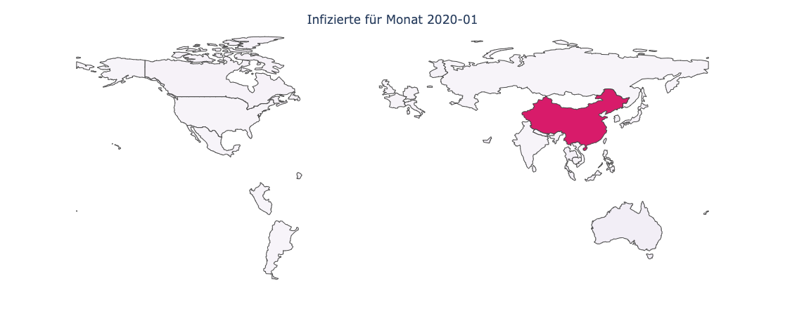
Abbildung 1.2: Monatlich Tote pro Land im zeitlichen Verlauf(2020,2021,2022)¶
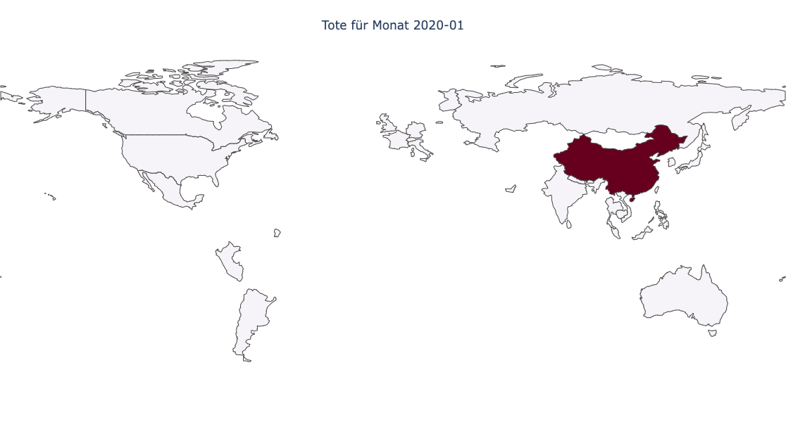
Deutschland¶
Auf deutscher Ebene soll gezeigt werden, wie viele Personen in Summe an Corona infiziert sind und wie viele an Corona gestorben sind.
Abbildung 2.1: Infizierte in DE in Summe¶
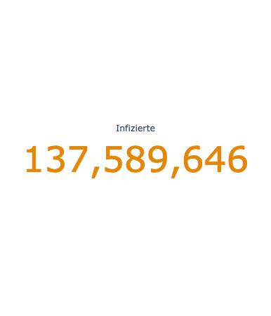
Abbildung 2.2: Tote in DE in Summe¶
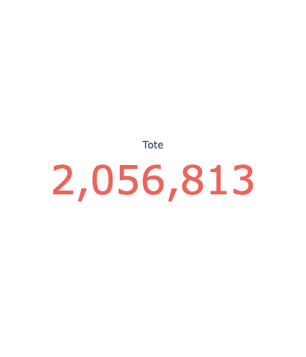
Bundesebene¶
Auf Bundesebene hat der Nutzer die Möglichkeit Kennzahlen zu verschiedenen “Themenbereichen” sich anzuschauen. Über Tabs kann dieser navigieren. Desweiteren kann er sich die Bundesländer auswählen, die er betrachten möchte.
Unter dem Tab Bettenbelegung soll der User einen Eindruck über die aktuelle Situation der Intensivbettenbelegung erhalten. Hierfür bekommt der User zunächst zwei Single-KPI’s angezeigt, die den aktuellen Stand abbilden.
Abbildung 3.1: Freie Betten¶
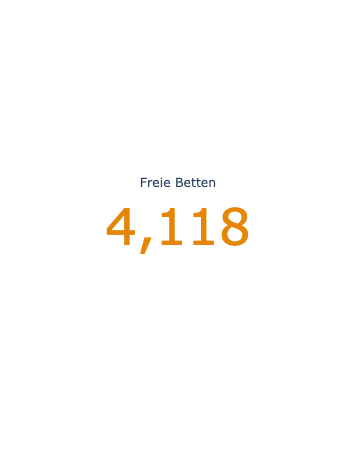
Abbildung 3.2: Belegte Betten¶
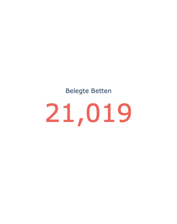
Abbildung 3.3: Anzahl Infizierte in Landkreise ohne freie Intensivbetten¶
Die Abbildung soll verdeutlichen, wie viele Infizierte aktuell kein freies Intensivbett zur Verfügung haben. Diese Grafik ist sogar auf Landkreisebene, gruppiert aber unter dem jeweiligen Bundesland. Dadurch erhält der Nutzer einen besseren Eindruck, ob sein Landkreis hiervon betroffen ist. Hierfür wird ein Balkendiagramm gewählt. Die jeweiligen Landkreise eines Bundeslandes kommen nacheinander, Landkreise aus dem gleichen Bundesland erhalten jeweils dieselbe Farbe. 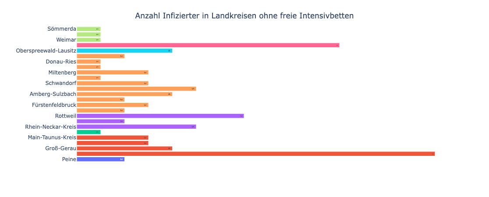
Abbildung 3.4: Impfstatus¶
Unter dem Tab Impfstatus soll der Nutzer einen Eindruck über die aktuelle Situation der Impfungen bekommen. Hier wird angezeigt wie viele Impfdosen in welchen Ländern bereits verabreicht wurden. Der Impfstatus wird als ein gestapeltes Balkendiagramm dargestellt. Dadurch sieht man, welche Bundesländer die meisten Impfdosen in Summe verabreicht haben. Zudem lassen sich die einzelnen Stati in den Bundesländern besser vergleichen. 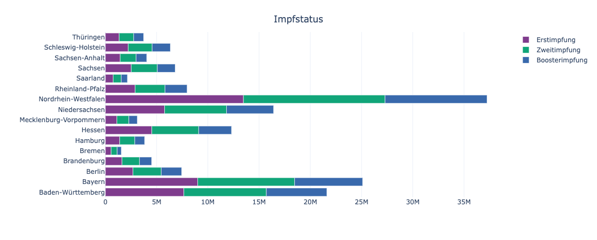
Abbildung 3.5: Impfquote Erstimpfung¶
Um sicherzustellen, dass die Bundesländer untereinander besser verglichen werden können, erfährt der User auch die Impfquoten der Erst- und Boosterimpfung im jeweiligen Bundesland. Die Impfquoten werden mithilfe eines Balkendiagramms dargestellt. 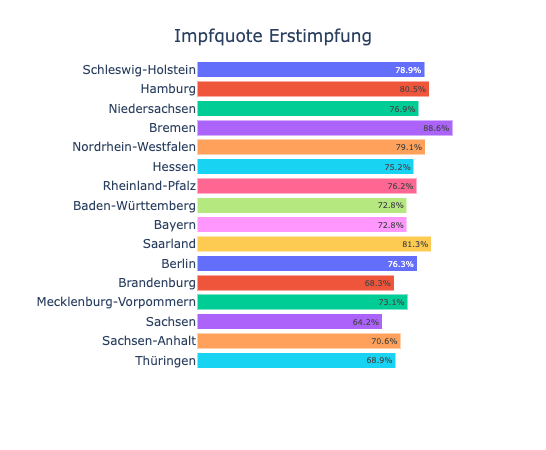
Abbildung 3.6: Impfquote Boosterimpfung¶
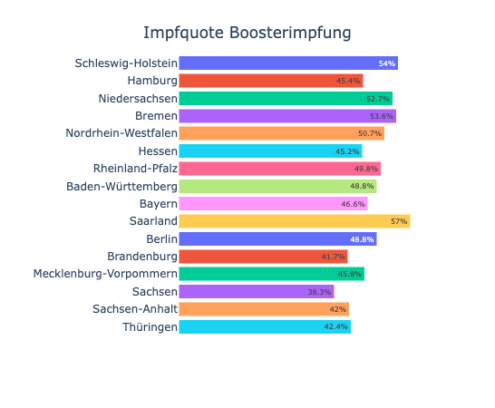
Abbildung 3.7: Forecast¶
Der Forecast dient dazu, zu verdeutlichen, wie sich die Pandemie entwickeln wird, wenn sich nichts verändert. Dadurch erhält der Nutzer einen Eindruck davon, was in den nächsten Monaten auf ihn zukommt, sollten die Impfungen nicht nach oben gehen. Die Zeitreihe wird als Liniendiagramm dargestellt mit hellgrünem Konfidenzintervall. 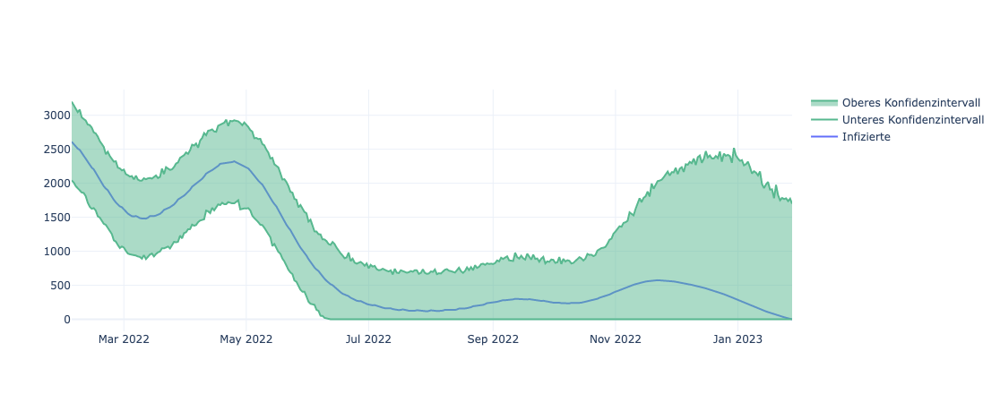